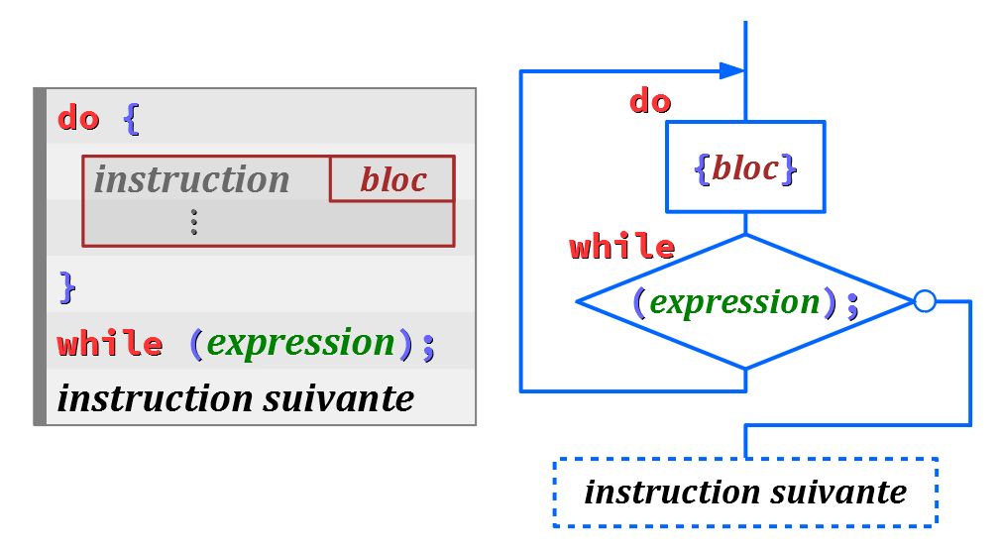

En l'absence de mots‑clefs spécifiques, le flux d'exécution d'un programme procède de façon séquentielle (ou « linéaire »), c'est‑à‑dire :
et, dans chaque bloc :
en suivant l'ordre d'inscription des blocs et des instructions dans le code source.
Une structure de contrôle du flux d'exécution est une instruction composée avec des mots‑clefs spécifiques qui modifient cet ordre. Le plus souvent, elle procède en évaluant une expression logique qui conditionne :
- une bifurcation simple ou multiple, via les mots‑clefs
if… else,switch… caseougoto, - ou des répétitions – on dit aussi une boucle – via les mots‑clefs
while,do… whileoufor.
Il va sans dire que les structures de contrôle sont essentielles pour la programmation structurée. Comme cela a déjà été évoqué au chapitre C1‑I , elles permettent de « factoriser » des instructions qui sinon devraient être répétées plusieurs fois dans le code source, avec tous les inconvénients – temps de saisie, lourdeur de stockage et pour la lecture, risques d'erreurs – que comporteraient une programmation purement séquentielle.
Pour un codeur débutant, il est donc absolument nécessaire de bien connaître les structures de contrôle du langage étudié, pour pouvoir les utiliser dès que possible. L'objectif de ce chapitre est d'en faire une présentation exhaustive, avec suffisamment de détails pour permettre d'en acquérir une bonne maîtrise.
Après quelques remarques préliminaires sur certains aspects syntaxiques communs, toutes les structures de contrôle des langages C et C++ sont présentées dans l'ordre suivant :
- la bifurcation simple
if … else; - la bifurcation multiple
switch … case … break; - les répétitions
whileetdo … while; - la répétition
fordont la syntaxe est à la fois puissante et complexe ; - le saut inconditionnel
gotodont l'usage est vivement déconseillé pour un débutant, mais dont il faut néanmoins connaître l'existence.
Toutes ces structures de contrôle sont systématiquement décrites comme dans la figure ci‑dessus par leur syntaxe générique et un algorigramme correspondant W.
Remarques préliminaires
Délimiteurs d'expression
Dans une structure de contrôle, il est obligatoires de délimiter par des parenthèses () l'expression qui conditionne la structure.
L'omission de ces parenthèses provoque inévitablement une erreur de compilation.
Le code ci‑dessous n'est pas compilable.
if a != 0 { …
Pour corriger l'erreur, il faut coder :
if (a != 0) { …
Délimiteurs de blocs
Dans une structure de contrôle, les accolades {} qui délimitent tout bloc sont facultatives si le bloc est constitué d'une seule instruction.
Mais en règle générale de bonnes pratiques, l'omission des accolades est déconseillée car cela constitue une source d'erreurs en cas d'éventuels ajouts d'instruction(s).
L'instruction if ci‑dessous codée sans accolades est compilable :
if (a != 0)
b = 1;
Mais si par la suite on veut ajouter une deuxième instruction c = 2; à exécuter dans le cas où la variable a est non nulle, et que l'on code sans y prendre garde :
if (a != 0)
b = 1;
c = 2;
ou même :
if (a != 0)
b = 1; c = 2;
alors l'instruction c = 2; sera exécutée dans tous les cas, même si la variable a est nulle !
En revanche, si dès le départ, on avait codé l'instruction if avec des accolades comme ci‑dessous :
if (a != 0) {
b = 1;
}
alors l'ajout de l'instruction c = 2; à la suite de b = 1; l'aurait « spontanément » placée dans le bloc de l'instruction if, grâce aux accolades, comme ci‑dessous :
if (a != 0) {
b = 1;
c = 2;
}
et avec, alors, une exécution conforme à celle attendue.
L'instruction de bifurcation simple if
Syntaxe minimale
Une instruction structurée de la forme if (expression) {bloc} code une bifurcation conditionnelle du flux d'exécution. Elle sous‑tend une alternative en fonction de la condition codée par l'expression :
- si cette condition est vraie :
- la machine exécute le bloc d'instructions ;
- puis passe à l'instruction suivante (après le bloc) ;
- sinon – donc si la condition est fausse – la machine « saute » le bloc pour passer directement à l'instruction suivante.
Dans cette syntaxe, les parenthèses () délimitant l'expression codent un opérateur de conversion de la valeur numérique de l'expression en valeur booléenne, avec le critère que :
- si l'expression prend une valeur numérique nulle, alors
(expression)prend la valeur booléenne0– autrement dit la condition est fausse ; - si l'expression prend une valeur numérique non nulle, alors
(expression)prend la valeur booléenne1– autrement dit la condition est vraie.
Par la suite, on pourra considérer simplement qu'une expression est évaluée fausse ou vraie selon qu'elle est respectivement nulle ou non.
Si a est une variable entière déjà déclarée, la bifurcation codée de façon « abrégée » :
if (a) { …
est équivalente à :
if (a != 0) { …
cette forme « complète » étant préférable, car plus lisible.
Néanmoins, la forme « abrégée » est souvent utilisée lorsque la variable qui doit être considérée comme étant à valeurs binaires est déclarée avec un identificateur explicite, typiquement de la forme is….
Ainsi, après avoir déclaré une variable isWindowOpen pour mémoriser si une fenêtre est fermée ou non, une instruction comme :
if (isWindowOpen) { …
est bien lisible, alors que sa forme « complète » :
if (isWindowOpen != 0) { …
rend l'expression de bifurcation inutilement compliquée.
- En C/C++, contrairement à d'autres langages comme Delphi ou ST, il n'y a jamais de mot‑clef
then. Il est implicite car inutile pour la syntaxe (on le qualifie de sucre syntaxique W, ce dont les langages C/C++ sont volontairement expurgés). - Dans la syntaxe minimale ci‑dessus, l'alternative à l'exécution du bloc – c'est‑à‑dire le fait de passer à l'instruction que le suit – est implicite (ici, il n'y a pas de mot‑clef
else; si on en code un, il faut aussi ajouter une instruction ou un bloc spécifique, ce qu'on va voir infra dans la syntaxe complète). - Une erreur classique consiste à confondre l'opérateur d'égalité
==avec celui d'affectation=. Lorsque ce dernier est utilisé par mégarde à la place du premier dans la condition de test d'une bifurcation, le code est compilable mais engendre une exécution inattendue ! - affecte à la variable
ala valeur0; - et prend cette même valeur
0, équivalente à la valeur logiquefalse.
La bifurcation a priori mal codée :
if (a = 0) { // Error! It should be (a == 0)
bloc
}
n'engendre aucun scénario incluant l'exécution du bloc, quelle que soit la valeur de la variable a avant l'exécution de cette instruction. En effet, l’évaluation de l'expression d'affectation a = 0 (cf. chap. C2‑IV ) :
La condition de bifurcation étant toujours fausse, le bloc n'est jamais exécuté !
De façon analogue, si la condition était codée if (a = 1) (ou n'importe quelle autre valeur non nulle), elle serait toujours évaluée vraie, donc le bloc serait toujours exécuté, quelle que soit la valeur prise par la variable a avant l'exécution de cette instruction.
Syntaxe complète
Dans une bifurcation if, il est possible d'expliciter l'alternative :
- en codant le mot‑clef
elseaprès le 1er bloc d'instructions, - en faisant suivre ce mot‑clef d'un 2e bloc d'instructions,
ce 2e bloc étant exécuté si l'expression est évaluée fausse, avant que le flux d'exécution passe à l'instruction suivante.
Une année est dite bissextile W (en anglais, leap year) si son numéro est divisible par 4 mais pas par 100, ou s'il est divisible par 400.
En déclarant préalablement une variable entière year pour stocker le numéro de l'année, et une variable booléenne leapYear, on peut coder le critère ci‑dessus par la bifurcation if suivante :
if ((year % 4 == 0 && year % 100 != 0) || year % 400 == 0) {
leapYear = true;
}
else {
leapYear = false;
}
Remarque : si a et b sont respectivement deux données entières, une expression de la forme a % b == 0 est vraie si et seulement si la valeur de a est divisible par celle de b (cf. chap. C3‑II ).
Imbrication de bifurcations
Les instructions dans chaque bloc peuvent elles‑mêmes être structurées. On peut donc enchaîner un if à la suite d'un else pour coder une bifurcation à multiples embranchements, comme ci‑dessous :
if (expression 1) { bloc 1 } else if (expression 2) { bloc 2 } else { bloc 3 }
En principe, il n'y a pas de limites syntaxiques de complexité aux imbrications de bifurcations (on coder autant de niveaux d'imbrication que l'on souhaite). Néanmoins, il faut tenir compte des exigences de lisibilité et tâcher de ne pas coder des imbrications qui seraient trop complexes pour être facilement comprises.
Syntaxe conditionnelle au sein d'une expression
L'opérateur conditionnel ? : permet de coder une bifurcation simple au sein d'une expression. Toutefois, pour des questions de lisibilité, il est déconseillé de l'employer tant qu'une instruction if est codable à la place.
C'est surtout pour coder des macro‑définitions que l'opérateur ? : est commode et adapté. C'est donc lors de l'étude de ces dernières qu'il sera présenté (cf. chap. C4‑III ).
L'instruction de bifurcation multiple switch
Syntaxe de base
Une instruction structurée de la forme switch (expression) {bloc général} permet de coder une bifurcation à multiples embranchements du flux d'exécution, et non plus seulement deux comme avec une instruction structurée if… else.
Elle obéit aux règles de syntaxe suivantes :
- l'expression est obligatoirement de type entier (catégorie qui inclut les types de caractères – cf. chap. C3‑I ) ou énuméré (cf. chap. C3‑I ) ;
- le bloc général est structuré par une série d'étiquettes de cas de la forme :
case valeur :
où valeur est : - en langage C, une expression constante entière (cf. chap. C2‑II ) ;
- en langage C++, une expression constante (cf. chap. C2‑II ) de type entier ;
- chaque étiquette de cas est suivie d'une séquence d'instructions qu'il n'est a priori pas nécessaire d'encapsuler dans des accolades
{}comme un bloc ; elles seront exécutées dans le cas où l'expression prend, au moment de son évaluation, la valeur codée ; - l'instruction facultative de saut inconditionnel
break;placée juste après la dernière instruction de la séquence impose à l'exécution de sortir de l'instruction structuréeswitchpour traiter son instruction suivante ; elle garantit qu'aucun des cas suivants ne sera examiné (et a fortiori, que leurs séquences d'instructions respectives ne seront exécutées) ; - l'étiquette facultative
defaultplacée en dernier, permet de faire exécuter une séquence d'instructions dans tous les autres cas, c'est‑à‑dire les cas non couverts par les autres étiquettes ; elle est à une structureswitchce que le mot‑clefelseest à une structureif;
default, si l'expression ne prend aucune des valeurs codées, l'exécution passe à l'instruction suivante sans qu'aucune d'instruction ait été exécuté. Pour coder un programme de calculatrice rudimentaire où l'utilisateur peut saisir en ligne une opération arithmétique simple et obtenir le résultat, on peut coder le test de l'opérateur avec une bifurcation multiple switch comme ci‑dessous :
#include <stdio.h>
int main(void) {
int a, b; // operands
char oper;
printf("Operation: ");
scanf("%d %c %d", &a, &oper, &b);
switch (oper) {
case '+' :
printf("> %d", a + b);
break;
case '-' :
printf("> %d", a - b);
break;
case '*' :
printf("> %d", a * b);
break;
case '/' :
printf("> %d", a / b);
break;
default :
printf("Unknown operation!");
}
return 0;
}
Selon le langage employé C ou C++, il y a une nuance subtile sur la contrainte syntaxique à laquelle doit répondre l'expression valeur d'une étiquette de cas dans une structure switch.
- En langage C, on ne peut pas composer cette expression avec des identificateurs de constantes déclarées.
- En langage C++, au contraire, on peut composer l'expression
case maxValue + 2 :car les identificateurs de constantes déclarées sont autorisés.
case maxValue + 2 : n'est pas compilable, parce qu'elle utilise un identificateur de donnée (et même s'il s'agit d'une constante). Encapsulation des séquences d'instructions dans des blocs
On a vu qu'en principe, la syntaxe générale de la structure switch ne requiert pas l'encapsulation dans un bloc {} des instructions d'un cas.
D'une certaine manière, une étiquette case valeur : et son instructions break; correspondante agissent comme des délimiteurs de la séquence d'instructions d'un cas.
Cas à clauses multiples
On peut coder un embranchement vers une même séquence d'instructions pour plusieurs valeurs que pourraient prendre l'expression conditionnant une instruction structurée switch.
Il suffit pour cela faire précéder cette séquence d'instructions d'une série d'étiquettes de cas comme illustré ci‑dessus : la séquence nº 1 sera alors exécutée si l'expression prend, lors de son évaluation, la valeur 1 ou la valeur 2.
Ayant déterminé supra dans la variable booléenne leapYear si une année est bissextile , et en déclarant préalablement une variable entière month pour stocker le numéro du mois, on peut déterminer le nombre de jours du mois dans une variable entière daysInMonth en codant la bifurcation multiple ci‑dessous :
switch (month) {
case 2 : // february
if (leapYear) {
daysInMonth = 29;
}
else {
daysInMonth = 28;
}
break;
case 4 : case 6 : case 9 : case 11 :
daysInMonth = 30;
break;
case 1 : case 3 : case 5 : case 7 : case 8 : case 10 : case 12 :
daysInMonth = 31;
break;
default :
daysInMonth = 0; // error code if month value is out of range
}
Codage d'un cas englobant intervalle de valeurs
Depuis la norme C99, il est possible de coder un cas de bifurcation switch qui englobe un intervalle de valeurs entières consécutives de la forme {valeur 1, … , valeur 2} (avec bien sûr valeur 1 < valeur 2). Il suffit d'employer la syntaxe suivante :
case valeur 1 ... valeur 2 :
en veillant bien à coder un espace de part et d'autre du séparateur ....
Cette syntaxe permet d'éviter le codage fastidieux de successions de cas identiques.
- Dans le code précédent pour déterminer le nombre de jours d'un mois, la ligne nº 32 peut être remplacée par :
- Pour tester la catégorie d'un caractère saisis par un utilisateur, on peut par exemple coder :
case 1 : case 3 : case 5 : case 7 ... 8 : case 10 : case 12 :
/* ^^^^^^^ */
switch (typedChar) {
case '0' ... '9' : // any digits
break;
case 'A' ... 'Z' : // any upper‑case letter
break;
case 'a' ... 'z' : // any lower‑case letter
break;
// etc.
}
L'instruction de répétition while
Syntaxes de base
Il existe deux syntaxes pour coder les boucles de répétition while.
La boucle while
Une instruction structurée de la forme while (expression) {bloc} permet de coder la répétition conditionnelle de l'exécution d'un bloc d'instructions :
- tant que l'expression est vraie, le bloc est exécuté ;
- sinon, si l'expression est fausse, l'exécution passe à l'instruction suivante sans exécuter le bloc ;
- l'évaluation de l'expression est renouvelée avant chaque exécution éventuelle du bloc.
Comme pour une bifurcation if, les parenthèses () délimitant l'expression jouent le rôle d'opérateur de conversion en valeur booléenne (cf. supra ).
Le programme ci‑dessous réitère le message « Hello, World! » tant que l'utilisateur ne s'y oppose pas.
#include <stdio.h>
int main(void) {
char typedChar = 0;
while (typedChar != '0') { // NB: '0' == 48 (ASCII code)
printf("Hello, World!\n");
printf("Type the '0' key if you want to stop,\n");
printf("or any other key to continue... ");
scanf(" %c", &typedChar);
}
return 0;
}
- Dans le code supra, il faut ne pas confondre le caractère nul (
0) qui est la valeur d'initialisation de la variabletypeCharet le chiffre zéro (la valeur de caractère codée'0'avec les guillemets simples, dont la valeur entière est48– son code ASCII, cf. chap. C3‑VIII ). - Lors du traitement d'une boucle
while, le bloc n'est jamais exécuté si l'expression de condition de répétition est d'emblée évaluée fausse. - Contrairement à d'autres langages comme Delphi ou ST, le mot‑clef
doest implicite en C/C++ dans cette première forme syntaxique de la bouclewhile.
typeChar est initialisé avec la valeur 0 et non pas '0' lors de la première évaluation de la condition d'exécution du bloc de la boucle.) La boucle do … while
Si l'on souhaite que l'évaluation de l'expression soit effectuée après chaque nouvelle exécution du bloc d'instructions – autrement dit, que ce dernier soit exécuté au moins une fois, quelle que soit la valeur de l'expression – il suffit de :
- coder le mot‑clef
doavant le bloc, - coder la condition :
while (expression);
après le bloc,
le principe de traitement étant le même que pour une boucle while, hormis la postériorité de l'évaluation de l'expression à l'exécution du bloc d'instructions.
Le programme ci‑dessous opère le même affichage que celui supra .
#include <stdio.h>
int main(void) {
char typedChar = 0;
do {
printf("Hello, World!\n");
printf("Type the '0' key if you want to stop,\n");
printf("or any other key to continue... ");
scanf(" %c", &typedChar);
}
while (typedChar != '0'); // NB: '0' == 48 (ASCII code)
return 0;
}
- Dans la syntaxe de la structure
do… while, bien noter le séparateur final;que l'on ne trouve jamais à la fin des autres structures de contrôle en langages C/C++ dès lors qu'elles se terminent pas une accolade fermante}de bloc. - La structure de contrôle
do… whileest équivalente à celle codéerepeat… untilen langage Delphi ou ST.
Bifurcations de fin anticipée
Une boucle while ou do… while peut être complexifiée grâce à une (voire plusieurs) instruction(s) facultative(s) de saut inconditionnel break; et continue;. L'un comme l'autre se codent en étant simplement suivi d'un séparateur ; pour constituer une instruction.
Pour qu'un tel saut ne soit pas systématique (sinon les instructions suivantes jusqu'à la fin du bloc d'instructions de la boucle seraient inutiles, car jamais exécutées), il est impératif de le coder sous condition – c'est‑à‑dire, par exemple, dans une bifurcation if suivie d'une expression secondaire – dans le bloc.
Le mot‑clef break
Le mot‑clef break commande une fin anticipé de la boucle.
Si l'expression secondaire qui conditionne ici la fin anticipée de la boucle while est évaluée vraie, alors la machine passe directement à l'instruction suivante codée immédiatement après la boucle, sans exécuter les instructions restantes jusqu'à la fin du bloc ni réévaluer l'expression principale de répétition.
Dans un programme de jeu de devinette d'un nombre dans un intervalle, on peut spécifier que la valeur 0 permet au joueur de quitter la partie de façon anticipée. On pourra alors coder cette fonctionnalité à l'aide d'une instruction break; dans la boucle de jeu, comme ci‑dessous en ligne n° 21.
while (attempt <= maxAttempt) {
printf("You have %d attempt(s) left\n", maxAttempt - attempt);
printf("Try to guess the hidden number between 1 and %d: ", maxNumber);
scanf("%d", &typedNumber);
if (typedNumber == 0) {
printf("What a pity! Maybe next time...\n\n");
break;
}
else // ...
}
Le mot‑clef continue
Le mot‑clef continue commande une fin anticipé de l'exécution du bloc d'instructions.
Si l'expression qui conditionne la fin anticipée du bloc est évaluée vraie, la machine repasse directement à l'évaluation de l'expression qui conditionne répétition de la boucle, sans exécuter les instructions restantes jusqu'à la fin du bloc.
Toujours dans le programme du jeu de devinette d'un nombre (cf. supra ), on peut choisir d'être indulgent avec le joueur s'il saisit une valeur supérieure à la borne supérieure de l'intervalle proposé et de recommencer la saisie sans incrémenter le compteur de tentatives. On codera cette possibilité à l'aide d'une instruction continue; dans la boucle de jeu, comme ci‑dessous en ligne n° 25.
else if (typedNumber > maxNumber) {
printf("Don't be silly!\n\n");
continue;
}
else // ...
Boucle « infinie »
Une boucle codée de la forme while (1) {bloc} provoque a priori la répétition « infinie » du bloc d'instructions, car la condition de répétition 1 est constamment évaluée vraie. Elle ne devient jamais fausse lors de l'exécution du programme.
On peut néanmoins coder une sortie d'une boucle « infinie » en insérant dans son bloc d'instructions une bifurcation avec une instruction de fin anticipée de la forme :
if… break;
- Si une boucle « infinie » ne comporte aucune bifurcation conditionnelle de fin anticipée, les instructions successives à cette boucle ne sont jamais exécutées – elles sont donc strictement inutiles.
- sur un ordinateur, par une commande de fin de tâche (typiquement, la fermeture de la fenêtre de la console d'exécution) ;
- sur une carte à microcontrôleur, par un signal de réinitialisation (reset).
- Le codage d'une boucle « infinie » est réservé aux programmes fonctionnant sans arrêt (automates de machines, vidéo-surveillance, etc.).
L'instruction de répétition for
En informatique, on appelle itération une exécution d'instruction (ou de bloc d'instructions) dans un processus répétitif : on parle de première itération, deuxième itération, etc.
Pour imposer un nombre déterminé d'itérations d'un bloc, on pourrait implémenter un compteur dans une boucle while. Toutefois, il est préférable d'employer l'instruction structurée for qui est précisément conçue dans ce but.
Syntaxe de base
En langages C/C++, l'instruction structurée for obéit à une syntaxe très souple construite autour d'une variable d'itération, de préférence entière.
Les possibilités de codage d'une boucle for sont très nombreuses. Un exemple typique très simple est proposé dans l'algorigramme de la figure ci‑dessous.
L'élément de code entre parenthèses () de la boucle consiste en 3 expressions séparées par le symbole ; comme des instructions, mais sans pour autant constituer un bloc séquentiel comme ailleurs dans le code.
- L'expression d'initialisation n'est évaluée qu'une seule fois, au début du traitement de la boucle.
- L'expression de condition est évaluée avant chaque nouvelle itération de la boucle.
- si la condition est vraie, alors le bloc d'instructions est exécuté ;
- si la condition est fausse, alors la boucle prend fin et l'exécution passe à l'instruction suivante ;
- L'expression de modification est évaluée après chaque nouvelle itération de la boucle.
Intérêt
L'intérêt de la boucle for est :
- bien entendu, de pouvoir spécifier un nombre déterminé d'itérations (alors que dans une boucle
while, on spécifie seulement une condition de répétition) ; - mais aussi et surtout, de disposer dans la boucle de la valeur courante de la variable d'itération pour mettre en œuvre des instructions en fonction de cette valeur.
Les trois exemples ci‑après donnent un tout petit aperçu des possibilités de codages de boucles itératives.
- La boucle
for (int i = 1; i <= 10; ++i)code 10 itérations. - La boucle
for (int i = 11; i > 0; i -= 2)code 6 itérations. - La boucle
for (int i = 2; i <= 32; i *= 2)code 5 itérations.
i prend toutes les valeurs entières de 1 à 10 ; le pas d'itération vaut
+1. i prend toutes les valeurs impaires de 11 à 1 ; le pas d'itération vaut
-2. i prend successivement les valeurs
2,
4,
8,
16,
32 ; le pas d'itération est croissant (il double à chaque itération).
Syntaxe avancée
Emploi de l'opérateur séquentiel
Les 3 expressions spécifiant les conditions de répétition d'une boucle :
for(initialisation;
condition;
modification)
peuvent être enrichies à l'aide de l'opérateur séquentiel , (cf. chap. C2‑II ).
La boucle :
for (int i = 1, j = 10; i <= j; i++, j--)
code 5 itérations au cours desquelles :
- la variable
iprend toutes les valeurs entières de1à5; - la variable
jprend toutes les valeurs entières de10à6.
Bifurcations de fin anticipée
Dans une boucle for, il est possible d'employer les mots‑clefs break et continue pour coder des bifurcations de fin anticipée de boucle ou d'itération comme dans une boucle while (cf. supra ).
Boucle « infinie »
L'instruction structurée for(;;) {bloc} qu'on lit forever, code une boucle « infinie » comme while (1) {bloc} (cf. supra ).
C'est dans le bloc d'une boucle for(;;) qu'est encapsulé l'appel de la fonction loop dans le fichier main.cpp généré par le logiciel Arduino IDE lors de la compilation d'un fichier d'extension .ino .
Remarques
- S'il y a une incompatibilité entre l'initialisation et la condition de répétition, comme par exemple, dans le code :
for (int i = 10; i <= 1; --i) {bloc}
le compilateur ne détecte aucune erreur ni n'émet d'avertissement. Il n'empêche que le bloc de cette boucle n'est jamais exécuté ! - En langages C/C++, rien n'interdit de modifier la variable d'incrémentation dans le bloc de la boucle. Toutefois, une telle pratique est vivement déconseillée, car :
- elle présente des risques de comportements non prévus par le codeur lors de l'exécution ;
- elle nuit fortement à la lisibilité du programme.
L'instruction de saut inconditionnel goto
Syntaxe de base
Une instruction de la forme goto identificateur; code une bifurcation inconditionnelle du flux d'exécution vers une étiquette (en anglais, label) de la forme identificateur: qui doit être dans le même fichier source.
- Le saut se produit quel que soit l'emplacement
de l'étiquette, avant ou après l'instruction
goto. - Ensuite, l'exécution reprend le flux a priori séquentiel qui suit l'étiquette.
L'identificateur n'a pas besoin d'être préalablement déclaré (il ne s'agit ni d'une donnée, ni d'une fonction).
En règle générale, un saut n'est jamais codé sans condition comme dans le schéma ci‑contre, sinon l'instruction A et ses suivantes codées jusqu'à l'étiquette ne sont a priori jamais exécutées.
L'instruction goto doit donc toujours être encapsulée dans une bifurcation if ou autre…
Bonne pratique
La lisibilité d'un programme est potentiellement impactée par toute bifurcation inconditionnelle dont l'étiquette n'est pas voisine de l'instruction de saut.
Le recours fréquent à ce type d'instructions si peu structurées peut transformer le code un véritable « sac de nœuds » avec des branches mortes et un comportement difficilement prévisible.
En conséquence, l'usage du mot‑clef goto est à éviter et doit rester aussi exceptionnel que possible.
Intérêt et limite
Malgré sa très mauvaise réputation (qui n'est pas usurpée), le saut inconditionnel goto présente des intérêts, ce qui explique pourquoi il est quand même parfois employé, y compris dans des contextes industriels.
On souhaite coder une sortie anticipée dans une boucle de répétition à structures multiples, typique lorsqu'on travaille sur des objets à plusieurs dimensions. Ainsi, avec deux boucles for imbriquées l'une dans l'autre, il faut a priori implémenter deux instructions break.
for (int i = 1; i <= 10; i++) {
for (int j = 1; j <= 12; j++) {
instruction;
⋮
if (condition de fin) break;
}
if (condition de fin) break;
}
instruction suivante;
Le fait de devoir coder deux fois la même condition de fin n'est pas satisfaisant. Une instruction goto peut s'y substitué avec un net avantage en termes de lisibilité, comme illustré ci‑dessous.
for (int i = 1; i <= 10; i++) {
for (int j = 1; j <= 12; j++) {
instruction;
⋮
if (condition de fin) goto exitFor;
}
}
exitFor :
instruction suivante;
L'intérêt du saut inconditionnel goto dans l'exemple donné ci‑dessus doit toutefois être relativisé. En effet, on peut aussi coder une sortie anticipée de n'importe quelle boucle par une instruction return dès lors qu'on encapsule la boucle dans une fonction (notion de code qui sera étudiée dans la partie C4 du cours). Une telle solution présente en plus l'avantage décisif de développer des programmes modulaires ; elle est donc privilégiée.